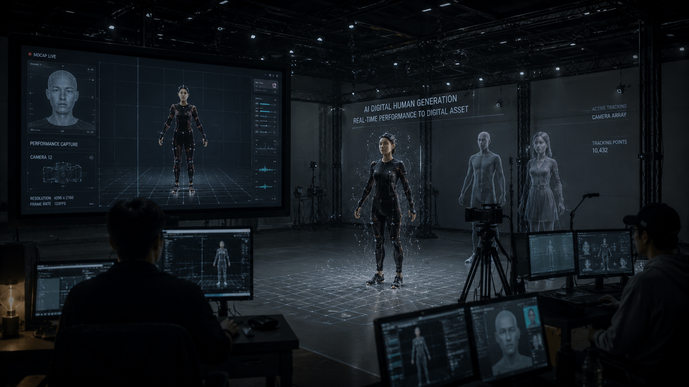

<!DOCTYPE html>
<html lang="zh-Hant">
<head>
  <meta charset="UTF-8" />
  <meta name="viewport" content="width=device-width, initial-scale=1.0" />
  <title>AI技術重現逝者生命</title>
  <link rel="preconnect" href="https://fonts.googleapis.com">
  <link rel="preconnect" href="https://fonts.gstatic.com" crossorigin>
  <link href="https://fonts.googleapis.com/css2?family=Noto+Sans+TC:wght@300;400;500;700&family=Inter:wght@300;500;700&display=swap" rel="stylesheet">
  <style>
    :root{--neon:#8de4ff;--soft:#d3f2ff;--glass:rgba(8,20,34,.34)}
    *{box-sizing:border-box} html,body{margin:0;background:#04070d;color:#e9f6ff;font-family:"Noto Sans TC",Inter,sans-serif;overflow-x:hidden}
    .scene{position:relative;min-height:185vh}
    .sticky{position:sticky;top:0;height:100vh;overflow:hidden;display:flex;align-items:center;justify-content:center}
    .bg{position:absolute;inset:0;background-size:cover;background-position:center;transform:scale(1.08);filter:brightness(.72)}
    .vignette,.scan,.noise{position:absolute;inset:0;pointer-events:none}
    .vignette{background:radial-gradient(circle at center,transparent 45%,rgba(2,4,10,.7) 100%)}
    .scan{background:repeating-linear-gradient(to bottom,rgba(131,226,255,.08) 0 1px,transparent 1px 4px);mix-blend-mode:screen;opacity:.25;animation:scan 6s linear infinite}
    @keyframes scan{to{transform:translateY(24px)}}
    .noise{background-image:url('data:image/svg+xml;utf8,<svg xmlns="http://www.w3.org/2000/svg" width="120" height="120"><filter id="n"><feTurbulence type="fractalNoise" baseFrequency="0.9" numOctaves="3"/></filter><rect width="120" height="120" filter="url(%23n)" opacity="0.07"/></svg>');mix-blend-mode:soft-light}
    .layer{position:absolute;max-width:520px;padding:1rem 1.2rem;backdrop-filter:blur(10px);background:var(--glass);border:1px solid rgba(153,235,255,.25);box-shadow:0 0 30px rgba(141,228,255,.15);border-radius:14px}
    h1{font-size:clamp(2rem,5vw,4rem);line-height:1.2;margin:.2rem 0 1rem}
    .sub{font-size:clamp(1rem,2vw,1.35rem);line-height:1.8;color:#d7ebf7}
    .frag{font-size:clamp(1.1rem,2.2vw,2rem);line-height:1.6;font-weight:300;letter-spacing:.03em}
    .quote{font-size:1rem;opacity:.85}
    .comments{position:absolute;inset:0;pointer-events:none}
    .comment{position:absolute;padding:.45rem .8rem;border:1px solid rgba(165,232,255,.25);border-radius:999px;background:rgba(8,18,33,.45);font-size:.92rem;opacity:.86}
    .ui-tags{position:absolute;right:8%;top:20%;display:grid;gap:.8rem}
    .tag{padding:.5rem .85rem;border:1px solid rgba(142,227,255,.45);font-size:.85rem;letter-spacing:.1em}
    .nodes{position:absolute;inset:10% 8% 16%}
    .node{position:absolute;padding:.5rem .8rem;border:1px solid rgba(132,224,255,.45);border-radius:8px;background:rgba(7,18,32,.6)}
    .line{position:absolute;height:2px;background:linear-gradient(90deg,rgba(100,200,255,.1),rgba(155,232,255,.9));transform-origin:left center}
    .issues{position:absolute;inset:20% 8%;display:flex;gap:2rem;justify-content:space-between}
    .issue{width:min(30%,320px);padding:1.2rem;border:1px solid rgba(147,232,255,.35);background:rgba(5,16,30,.45);backdrop-filter:blur(8px);transition:.3s;animation:floaty 6s ease-in-out infinite}
    .issue:hover{box-shadow:0 0 36px rgba(141,228,255,.34);transform:translateY(-8px) scale(1.03)}
    @keyframes floaty{50%{transform:translateY(-12px)}}
    #comment-wall-canvas{position:absolute;inset:0;z-index:5}
    .country-tabs{position:absolute;z-index:6;left:8%;bottom:10%;display:flex;gap:.7rem}
    .country-tabs button{background:rgba(6,16,30,.6);color:#d8f5ff;border:1px solid rgba(148,228,255,.45);padding:.5rem .9rem;cursor:pointer}
    .country-tabs button.active{background:rgba(130,225,255,.2)}
    .future-grid{position:absolute;inset:16% 8%;display:grid;grid-template-columns:repeat(2,minmax(230px,1fr));gap:1.2rem}
    .future{padding:1rem;border:1px solid rgba(135,220,255,.32);background:rgba(5,16,30,.45);min-height:180px}
    .parallax-duo{position:absolute;inset:22% 8% 18%;pointer-events:none}
    .parallax-img{position:absolute;width:min(38vw,560px);border:1px solid rgba(155,232,255,.35);box-shadow:0 16px 60px rgba(0,0,0,.45);filter:saturate(1.05)}
    .parallax-img.one{left:4%;top:10%}
    .parallax-img.two{right:2%;top:36%}
    .ending-chat{position:absolute;left:8%;bottom:16%;display:grid;gap:.6rem}
    .ending-chat span{padding:.5rem .8rem;border-radius:10px;background:rgba(13,25,39,.55);border:1px solid rgba(165,230,255,.2);width:fit-content;opacity:0}
    .final{position:absolute;inset:0;display:flex;align-items:center;justify-content:center;text-align:center;font-size:clamp(1.8rem,4vw,3.4rem);padding:1rem;opacity:0}
  </style>
</head>
<body>
  <main id="app"></main>
  <script src="https://cdn.jsdelivr.net/npm/gsap@3.12.5/dist/gsap.min.js"></script>
  <script src="https://cdn.jsdelivr.net/npm/gsap@3.12.5/dist/ScrollTrigger.min.js"></script>
  <script src="https://cdn.jsdelivr.net/npm/@studio-freight/lenis@1.0.42/bundled/lenis.min.js"></script>
  <script src="https://cdn.jsdelivr.net/npm/p5@1.9.3/lib/p5.min.js"></script>
  <script>
  gsap.registerPlugin(ScrollTrigger);
  const app=document.getElementById('app');
  const mk=(id,bg,inner)=>`<section class="scene" id="${id}"><div class="sticky"><div class="bg" style="background-image:url('${bg}')"></div><div class="scan"></div><div class="noise"></div><div class="vignette"></div>${inner}</div></section>`;
  app.innerHTML =
    mk('hero','pic/01hero-ai-memory.png',`<div class="layer" style="left:8%;top:18%"><div class="quote" id="typing"></div><div class="quote">【記者陳少凡、黃暐喬、陳雙、顏貝恩報導】</div><h1>AI技術重現逝者生命<br>臺灣數位永生如何發展</h1><div class="sub">當 AI 開始模擬逝者的聲音、表情與記憶，<br>死亡是否仍然是一個明確的終點？</div></div><div class="comments">${['如果媽媽還能再跟我說一次話呢？','這根本是在消費死人。','我願意每天跟他聊天。','死亡本來就該結束嗎？','如果它真的像他，你還願意放手嗎？'].map((t,i)=>`<div class='comment' style='left:${12+i*16}%;top:${60+(i%2)*10}%;'>「${t}」</div>`).join('')}</div>`) +
    mk('s1','pic/02zgliang-stage.png',`<div class='layer frag' style='left:10%;top:22%'>「音樂響起，伴隨俏皮幽默的步伐，<br>曾經的秀場天王豬哥亮再次登場。」</div><div class='layer frag' style='right:9%;top:42%'>「2026年除夕夜《民視第一發發發》，<br>AI重建已逝主持人的聲音與神情。」</div><div class='layer frag' style='left:18%;bottom:18%'>「高度擬真的再現，<br>讓數位永生不再只是科幻想像。」</div>`) +
    mk('s2','pic/03family-digital-human.png',`<div class='layer frag' style='left:8%;top:24%'>「打開手機，離世多年的親人站在螢幕裡打招呼。」</div><div class='layer frag' style='right:10%;top:45%'>「很多客戶在家人往生後，<br>希望至親能在婚禮或告別式上與他們講話。」</div><div class='layer frag' style='right:10%;bottom:14%'>「數位永生帶來新的對話，<br>讓人重新整理思念與遺憾。」</div>`) +
    mk('s3','pic/04val-kilmer-ai.png',`<div class='layer frag' style='left:8%;top:20%'>「這份思念，不只停留在家屬。」</div><div class='layer frag' style='left:14%;top:45%'>「逝去明星，也開始重返螢光幕。」</div><div class='ui-tags'><div class='tag'>VOICE RECONSTRUCTION</div><div class='tag'>AI PERFORMANCE</div><div class='tag'>DIGITAL ACTOR</div></div>`) +
    mk('s4','pic/10tech-process.png',`<div class='layer quote' style='left:8%;top:14%'>「數位永生並非由單一技術完成，而是透過 API 串接整合。」</div><div class='nodes'><div class='node' style='left:5%;top:22%'>VOICE CLONING</div><div class='node' style='left:30%;top:12%'>ASR</div><div class='node' style='left:47%;top:30%'>TTS</div><div class='node' style='left:62%;top:52%'>LLM</div><div class='node' style='left:22%;top:56%'>MEMORY DATABASE</div><div class='node' style='left:74%;top:20%'>FACE SYNC</div><div class='line' style='left:17%;top:24%;width:15%;transform:rotate(-12deg)'></div><div class='line' style='left:39%;top:22%;width:12%;transform:rotate(28deg)'></div><div class='line' style='left:53%;top:34%;width:15%;transform:rotate(21deg)'></div><div class='line' style='left:36%;top:58%;width:26%;transform:rotate(-3deg)'></div></div>`) +
    mk('s5','pic/10tech-process.png',`<div class='issues'><div class='issue'>語言模型與文化落差</div><div class='issue'>台語訓練困難</div><div class='issue'>即時互動硬體成本</div></div><div class='layer quote' style='left:8%;bottom:10%'>「即使導入現成模型，文化與慣用語差異仍會破壞擬真感。」</div>`) +
    mk('s6','pic/06taiwan-comments.png',`<div id='comment-wall-canvas'></div><div class='country-tabs'>${['台灣','中國','日本','韓國'].map((c,i)=>`<button data-country='${c}' class='${i===0?'active':''}'>${c}</button>`).join('')}</div>`) +
    mk('s7','pic/05wonderland-video-call.png',`<div class='layer frag' style='left:9%;top:28%'>「如果科技能製造重逢，<br>它也可能延長告別。」</div><div class='layer' style='right:8%;bottom:16%'>Wonderland・白李・虛擬世界・善意的謊言</div>`) +
    mk('s8','pic/11legal-ethics.png',`<div class='issues'><div class='issue'>人格權</div><div class='issue'>著作權</div><div class='issue'>死後授權</div></div><div class='layer frag' style='right:8%;bottom:18%'>「人格權只保障有生命的人。」</div><div class='layer quote' style='left:8%;bottom:10%'>「若能在生前聲明授權與使用年限，能降低死後人格被濫用風險。」</div>`) +
    mk('s9','pic/12elder-care.png',`<div class='parallax-duo'></div><div class='future-grid'><div class='future'>長照陪伴</div><div class='future'>PetMemory.ai</div><div class='future'>AI藝人</div><div class='future'>數位分身</div></div>`) +
    mk('end','pic/15ending-chat.png',`<div class='ending-chat'><span>「我在。」</span><span>「你最近還好嗎？」</span><span>「不要太晚睡。」</span><span>「我記得你。」</span></div><div class='final'>「如果它真的像他，<br>你還願意放手嗎？」</div>`);

  const lenis = new Lenis({lerp:.08,smoothWheel:true});
  requestAnimationFrame(function raf(t){lenis.raf(t);requestAnimationFrame(raf);});

  gsap.utils.toArray('.scene').forEach(scene=>{
    const bg=scene.querySelector('.bg');
    gsap.fromTo(bg,{scale:1.15},{scale:1,scrollTrigger:{trigger:scene,start:'top bottom',end:'bottom top',scrub:1.2}});
    gsap.fromTo(scene.querySelectorAll('.layer,.issue,.future,.tag,.comment,.node,.line'),{y:50,opacity:0},{y:0,opacity:1,stagger:.08,scrollTrigger:{trigger:scene,start:'top 70%',end:'top 20%',scrub:1}});
  });
  gsap.fromTo('#s9 .parallax-img.one',{yPercent:-8,scale:1.06},{yPercent:18,scale:1,scrollTrigger:{trigger:'#s9',start:'top bottom',end:'bottom top',scrub:1.1}});
  gsap.fromTo('#s9 .parallax-img.two',{yPercent:22,scale:.95},{yPercent:-16,scale:1.05,scrollTrigger:{trigger:'#s9',start:'top bottom',end:'bottom top',scrub:1.1}});
  gsap.to('.final',{opacity:1,duration:1.8,scrollTrigger:{trigger:'#end',start:'70% center',toggleActions:'play none none reverse'}});
  gsap.to('.ending-chat span',{opacity:1,stagger:0.8,duration:1,scrollTrigger:{trigger:'#end',start:'top center'}});

  const typing='SYSTEM BOOTING // MEMORY RECONSTRUCTION //';
  let i=0; const box=document.getElementById('typing');
  setInterval(()=>{box.textContent=typing.slice(0,(i++%typing.length)+1)},90);

  const countryData={
    '台灣':{bg:'pic/06taiwan-comments.png',c:['如果只是婚禮上再聽到爸爸一次聲音，我可以接受。','人都走了還一直生成他的樣子，不會太殘忍嗎？','最可怕的是家屬被困在假的陪伴裡。','這種東西一定要本人死前同意吧。','台語不像本人會超出戲。','法律到底有沒有規範？','我能理解思念，但不希望變成商業表演。','有些人真的只是想好好道別。']},
    '中國':{bg:'pic/07china-comments.png',c:['科技發展到這裡很正常。','有需求就會有市場。','這不是復活，只是給活人安慰。','以後每個人可能都會提前做數位分身。','殯葬業一定會大量使用。','AI 再像也不是本人。','這種技術很容易被拿去詐騙。','我願意再跟過世家人聊天一次。']},
    '日本':{bg:'pic/08japan-memory.png',c:['比起復活，更像保存回憶。','孤獨的人可能真的會需要。','如果太依賴，就永遠無法接受死亡。','寵物的回憶也值得被保存。','我希望它安靜存在，不要太像真人。','放下不代表忘記。','有些聲音留下來就足夠了。','這比較像陪伴，而不是復活。']},
    '韓國':{bg:'pic/09korea-virtual.png',c:['《夢境》那種設定很美，但也很可怕。','科技越像真人越危險。','娛樂產業一定會先全面使用。','重逢很感人，但也可能困住人。','如果 AI 替演員演戲，授權算誰的？','小孩不知道媽媽已經過世，真的好嗎？','這是療癒還是逃避？','科技開始替死者說話了。']}
  };
  let current='台灣';
  document.querySelectorAll('.country-tabs button').forEach(btn=>btn.onclick=()=>{current=btn.dataset.country;document.querySelector('#s6 .bg').style.backgroundImage=`url('${countryData[current].bg}')`;document.querySelectorAll('.country-tabs button').forEach(b=>b.classList.remove('active'));btn.classList.add('active');});
  new p5((p)=>{
    const particles=[]; p.setup=()=>{p.createCanvas(window.innerWidth,window.innerHeight).parent('comment-wall-canvas'); for(let i=0;i<22;i++) particles.push({x:Math.random()*p.width,y:Math.random()*p.height,vx:(Math.random()-.5)*.5,vy:(Math.random()-.5)*.4,s:Math.random()*16+12,t:i%8,a:Math.random()*130+60}); p.textFont('Noto Sans TC');};
    p.windowResized=()=>p.resizeCanvas(window.innerWidth,window.innerHeight);
    p.draw=()=>{p.clear(); const arr=countryData[current].c; particles.forEach(pt=>{pt.x+=pt.vx; pt.y+=pt.vy; if(pt.x<-240)pt.x=p.width+60;if(pt.x>p.width+240)pt.x=-60;if(pt.y<-30)pt.y=p.height+20;if(pt.y>p.height+30)pt.y=-20; p.push(); p.translate(pt.x,pt.y); p.scale(0.8+0.5*Math.sin((p.frameCount+pt.t*15)*0.01)); p.fill(208,242,255,pt.a); p.noStroke(); p.textSize(pt.s); p.text('「'+arr[pt.t]+'」',0,0,280); p.pop();});};
  });
  </script>
</body>
</html>
